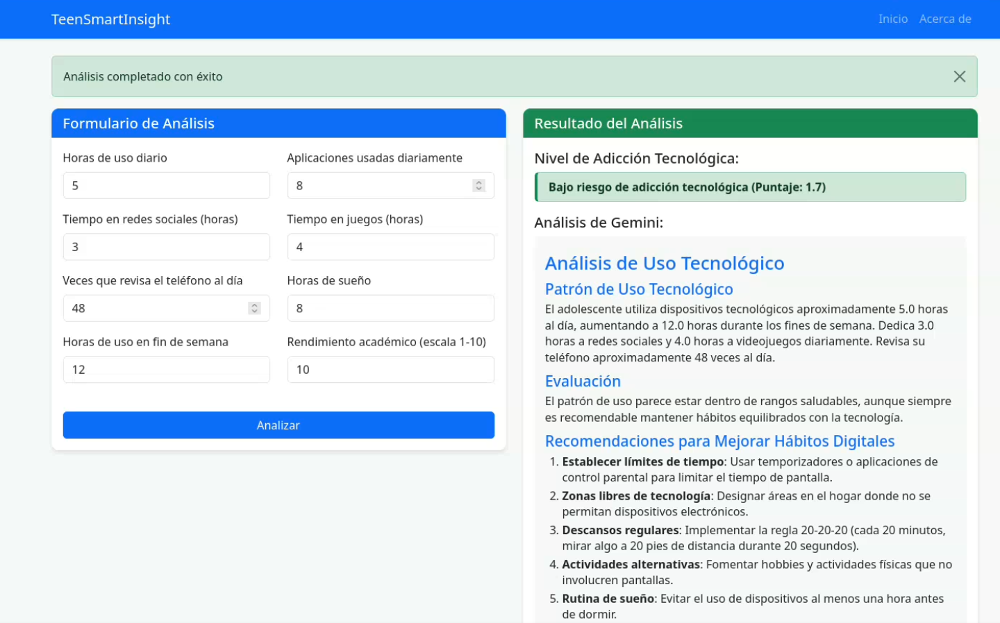
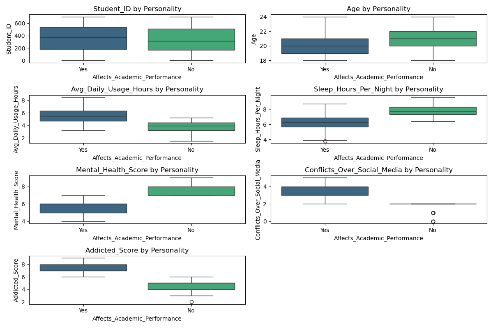
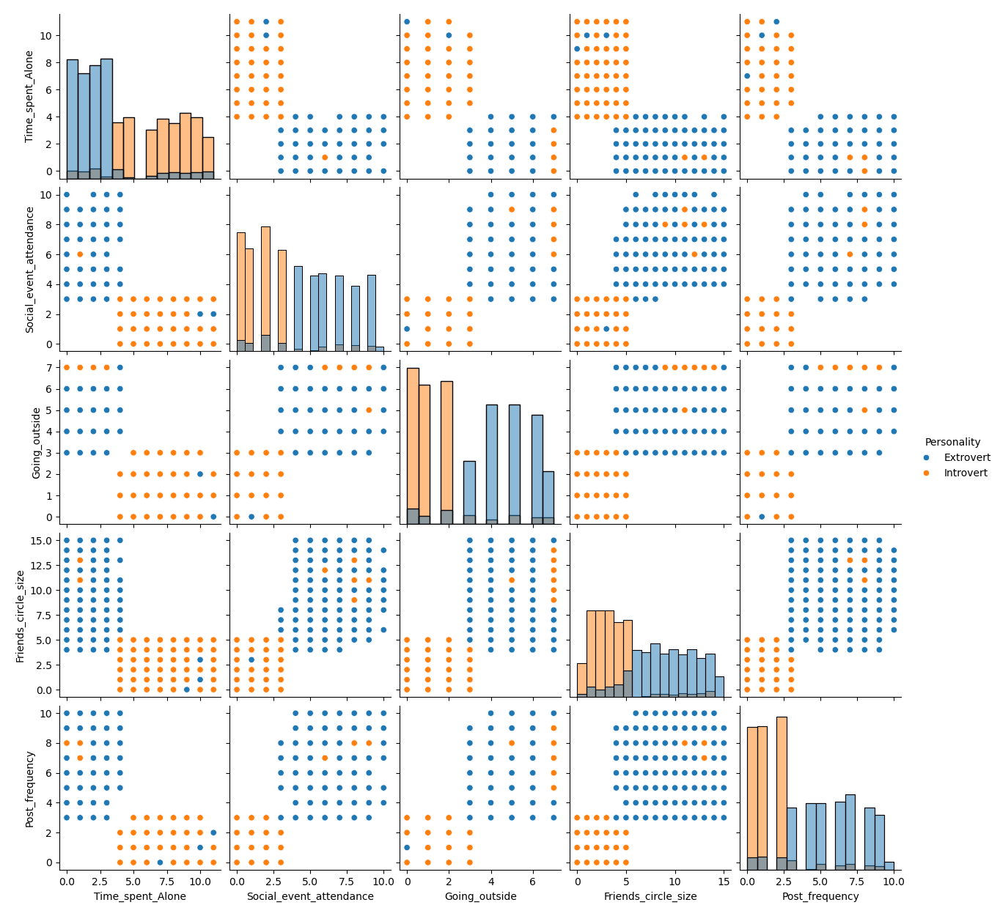
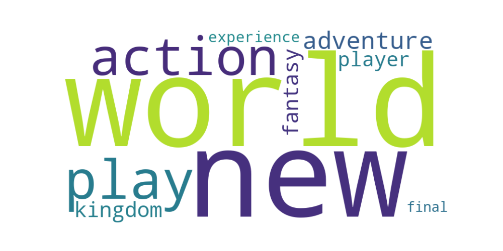

Hola, soy Dylan Andrés Elizondo Alvarado
Estudiante de Ingeniería en Sistemas de Información | Ciencia de Datos
Descargar CVEstudiante de Ingeniería en Sistemas de Información | Ciencia de Datos
Descargar CVHola, soy Dylan Andrés Elizondo Alvarado
Estudiante de Ingeniería en Sistemas de Información en la Universidad Nacional de Costa Rica (UNA), apasionado por el desarrollo de software, análisis de datos y machine learning.
Hi, I'm Dylan Andrés Elizondo Alvarado
Information Systems Engineering student at the National University of Costa Rica (UNA), passionate about software development, data analysis, and machine learning.
Automatiza la construcción, pruebas y despliegue de aplicaciones usando una pipeline CI/CD para un desarrollo y entrega eficiente.
RepositorioJuego de PacMan hecho con Python, utilizando algoritmos de búsqueda como A*. Algoritmos de ML como Q-Learning.
Repositorio
Una herramienta completa para analizar el uso de la tecnología por parte de los adolescentes y predecir los niveles de adicción. Creada con ciencia de datos y un modelo de regresión Random Forest, envuelta en una interfaz web Flask fácil de usar. Incluye análisis exploratorio de datos e integración con la IA Google Gemini para recomendaciones personalizadas.
Ver más
Este proyecto analiza la adicción a redes sociales en estudiantes de varios países y niveles académicos. Se exploran factores como horas de uso, conflictos y salud mental, y se utiliza un modelo Random Forest para predecir el impacto en el rendimiento académico. Instagram y TikTok son las plataformas más populares.
Ver más
Explora un conjunto de datos sobre rasgos de personalidad y comportamiento social. Se utiliza un modelo Random Forest para predecir si una persona es extrovertida o introvertida, analizando variables como estrés social, interacción en redes y tiempo a solas. El modelo logra una clasificación equilibrada y representativa.
Ver más
Análisis de tendencias, precios y reseñas de los juegos más destacados de Steam en 2024. Se exploran categorías, precios, descuentos y opiniones de la comunidad, permitiendo visualizaciones y análisis de mercado para identificar patrones clave en la industria del gaming.
Ver más